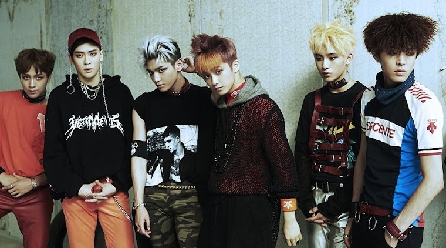
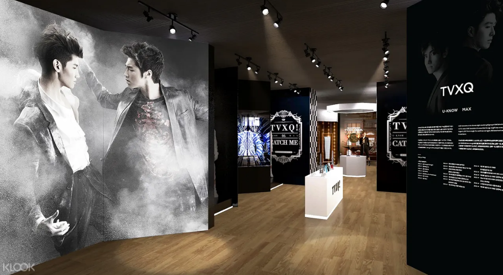

El caso de Corea del Sur: la influencia del k-pop en la economía nacional
El k-pop, también conocido simplemente como pop coreano, tomó al mundo por sorpresa más de una vez, comenzando por éxitos excéntricos como Gangnam Style en 2012, siguiendo con la fama explosiva de grupos como BTS y Blackpink, y finalmente llegando a su punto más alto en 2025 con el lanzamiento de la película KPop Demon Hunters. Un estilo musical que, en algún momento no muy lejano en el tiempo, tuvo el mero rol de llenar un nicho con una base de fanáticos leales, es hoy en día parte del mainstream. ¿Cómo logró la industria musical entera de un país convertirse en un fenómeno que dominó al mundo por completo?
La respuesta es complicada: el k-pop está lejos de ser un género aislado, sino que se trata de una subcultura basada en los frutos de otros géneros musicales y prácticas culturales. Musicalmente, el k-pop es una amalgamación de hip-hop, pop tradicional, rock y música electrónica. Culturalmente, el k-pop involucra rituales de fanatismo característicos de la cultura de idols en Japón. Como consecuencia de su fuerte introducción en el mercado estadounidense, se ha producido una “americación” aún mayor del género, sumándose al hecho de que una gran parte de los equipos de producción en las empresas de k-pop están compuestos por profesionales europeos y americanos.
Si bien la síntesis cultural del k-pop es realmente interesante, este trabajo va a enfocarse en la influencia que tiene la industria de este género sobre la economía de Corea del Sur. La dominación mundial del k-pop no pudo haber llegado sin consecuencias para su país de origen, y el enfoque será entonces, como fue definido en el marco teórico, comprender si la música realmente tuvo un efecto sobre la esfera económica como asumimos en la hipótesis. Cuestiones como el incremento del turismo, la exportación de álbumes y merchandising, e incluso la influencia que el k-pop ha tenido sobre la explosión de otras industrias como el llamado skincare coreano o la comida tradicional, tienen relevancia a la hora de determinar qué tan influyente ha sido el k-pop sobre la economía coreana siempre que se encuentren relaciones directas.
En lo que implica a lo personal, he tenido un interés en el k-pop hace más de ocho años, por lo que ha sido fascinante observar la escena cambiar y popularizarse con tal exponencialidad fuera de Corea del Sur. Algo que hace no más de cinco años era una completa novedad e incluso difícil de comprender para los ajenos a la base de fanáticos, hoy se ha convertido en algo que vemos en cualquier vidriera de un negocio al pasar, una presencia inescapable en las radios alrededor del mundo.
Antes de comenzar a definir al k-pop como género, otro concepto importante a definir es la “ola Hallyu”, que se refiere a la popularidad que ganó la economía coreana alrededor del mundo. Se trata de una forma de poder blando mediante la cual la cultura de Corea del Sur puede convertirse en un producto de exportación, ya sea en forma de música, programas de televisión, películas y marcas coreanas. Este término fue introducido por medios de comunicación chinos en los ‘90s, ya que hasta la primera mitad de esta década, los habitantes coreanos no podían salir del país. Una vez que este bloqueo fue eliminado, la cultura surcoreana comenzó a esparcirse por el mundo. Es tal la importancia de la ola Hallyu al día de hoy, que el Ministerio de Cultura del gobierno coreano continúa apoyando el desarrollo de la cultura popular coreana, financiando la industria del entretenimiento para que continúe creciendo y generando ingresos para el país. (Toyryla, 2025) Este será el eje principal de este estudio de caso.
Concepto del k-pop
Si bien el nombre de este género puede parecer lo suficientemente simple para deducir en base a su etimología el verdadero significado, es verdad también que hay detalles que la simplificación de “pop coreano” deja a un costado. El diccionario de Oxford define al k-pop como “un género de música popular originaria de Corea, combinando elementos de música coreana tradicional con influencias musicales occidentales, caracterizado por el uso frecuente de frases en inglés mezcladas con las letras coreanas, y típicamente interpretado por solistas jóvenes o grupos cuyas rutinas de baile complejas y vestuarios distintivos o coloridos están diseñados para atraer a un público internacional”. (Oxford Dictionary, s.f.) Esta definición resulta, a primera vista, completa en términos de las características estilísticas del k-pop y la cultura que lo rodea, pero lleva, sin embargo, a la exclusión de un gran número de éxitos y artistas conocidos a gran escala como exponentes centrales del género.

La definición de k-pop de BBC tiene aún más aspectos a tener en cuenta; agrega al concepto el hecho de que es un género que ha crecido en popularidad en los años recientes, evolucionando desde un género localizado a un fenómeno global. Menciona también que incorpora un amplio rango de características de la cultura joven y estilos musicales incluyendo al pop, hip-hop, R&B, música dance electrónica y música tradicional coreana. (BBC, 2025) Britannica le da otro enfoque a su definición, asemejándose un tanto a la idea de “pop coreano” descrita anteriormente. Sin embargo, agrega la idea de los “idols”, o artistas entrenados por compañías de entretenimiento para convertirse en estrellas de pop. (Colón, 2025)
Una de las cuestiones de mayor interés a la hora de definir al k-pop como concepto es el hecho de que hay artistas activos en el género que deciden participar de estas discusiones. RM, integrante del grupo k-pop BTS, por ejemplo, ha hablado sobre sus ideas respecto de qué debería considerarse k-pop y qué no a lo largo de los años, y sus perspectivas han evolucionado con el paso de los años, en la misma medida en que la industria y la escena han cambiado. En 2021, hablando sobre la canción Dynamite lanzada por su grupo, se preguntó lo siguiente: “Si está cantada en inglés, ¿entonces no es k-pop?”. En esta misma entrevista, habló sobre la dificultad de decir con certeza qué es el k-pop, puesto que hoy en día hay numerosas bandas con integrantes extranjeros cuyos países de origen no tienen relación con el k-pop.
Teniendo todos estos datos en cuenta, no podemos definir al k-pop simplemente como “pop coreano”, o a música pop escrita primariamente en coreano con algunas frases en inglés, especialmente porque hay varios artistas clasificados universalmente como k-pop que no cuentan con estas características. Tampoco podemos reducirlo a simplemente música pop influenciada por sonidos tradicionales coreanos, ya que las influencias del k-pop vienen en partes iguales de numerosas culturas, e incluso existe una multiplicidad de piezas del movimiento que no pueden considerarse música pop en un principio.
Habiendo hecho estas consideraciones, creo apropiado definir al k-pop en este trabajo como un movimiento musical originalmente coreano, acompañado por una cultura del fanatismo hacia los idols y entrenamiento exhaustivo de sus artistas, cuyo producto musical acarrea influencias del pop occidental, la música tradicional coreana, el hip-hop, el rock, los R&B y la electrónica.
Historia del k-pop
Si bien ya existían grupos de música popular en Corea del Sur alrededor de los 1960s, lo cierto es que, usando la definición presentada por este trabajo, no se ajustarían a nuestros propósitos. Estos grupos tenían más similitudes con los grupos femeninos mencionados en la sección de rock, como puede evidenciarse en el caso de The Kim Sisters, que lograron presentarse en múltiples ocasiones en The Ed Sullivan Show, al igual que los Beatles. Si bien estos grupos le dieron paso a las corrientes de música popular coreana del futuro, vamos a comenzar la historia del k-pop en lo que consideramos contemporáneo; como explicamos en la delimitación de la contemporaneidad, se usará aquello que representa un diálogo entre la música y las cargas que lleva la cultura que la produce. El contexto histórico en el que estos grupos fueron concebidos es completamente diferente al ambiente que comenzó a crearse en los ‘90s, cuando nacieron los primeros grupos de k-pop casi como lo conocemos hoy en día.
El k-pop asemejado a la forma en que lo conocemos al día de hoy nació en 1992, de la mano del grupo masculino Seo Taiji & Boys. Esta banda fue creada en un marco sociopolítico nuevo para Corea del Sur: las políticas de globalización estaban dándole paso a la música extranjera en las radios, exponiendo a la juventud surcoreana a los éxitos estadounidenses caracterizados por ritmos rápidos y bailables, influenciados por géneros como el hip-hop y el new jack swing. Seo era un músico aspirante que buscaba mejorar sus habilidades y talentos, y decidió unirse a un artista intentando establecerse en la industria llamado Yang Hyunseok, que quedó impresionado con su trabajo. Como consecuencia, ofreció a Seo formar parte de un grupo con dos integrantes más. Seo Taiji & Boys, el grupo resultante, tuvo que enfrentarse a un fuerte rechazo por parte de los críticos conservadores del momento. El público general, sin embargo, quedó encantado con su música, una hazaña que quedó reflejada en las ventas. (Yoo, 2020) La primera presentación de su pieza I Know en 1992 es conocida hoy como el hito que marcó el comienzo del k-pop.
La historia del k-pop aún está en desarrollo, por lo cual encontrar material que detalle los grupos y eventos más influyentes se dificulta. De cierta manera, la historia aún está siendo escrita, y la mejor manera de comprender su evolución es formar parte de ella en su consumo. Entre aficionados del k-pop, el recorrido histórico más ampliamente aceptado es el de la publicación coreana Idology, que sistematiza las “generaciones” del k-pop de las que hablan los fanáticos cuando discuten estos temas. Sin embargo, el autor de esta categorización comienza su recorrido en 1996, puesto que fue aquel el año donde debutó H.O.T., el primer grupo que formó parte de la cultura idol indiscutiblemente. (Choi, 2020)
Antes de adentrarnos en las generaciones del k-pop y lo que cada una aportó al desarrollo del género y la cultura que lo rodea, es necesario dejar en claro la cuestión de la vida de un idol y lo que implica ser fanático de uno de ellos. En la industria del k-pop, los grupos se forman por medio de una empresa que recluta posibles jóvenes talentos, que los entrena durante períodos que pueden variar de unos pocos meses a muchos años para convertirlos en idols. Estas empresas tienen equipos de producción que eligen canciones para que sus grupos graben, y se encargan de que la imagen de sus artistas esté completamente pulida. Basado en sus talentos, apariencia y personalidad, cada integrante del grupo tiene un rol asignado: ya sea líderes, vocalistas, raperos o los llamados visuales, que suelen ser colocados al centro de fotografías grupales por tener rasgos faciales excepcionalmente bellos. (Colón, 2025) Si bien en occidente esto suele considerarse falso o inauténtico, esta idea de la manufactura de los artistas se expresa con transparencia en el k-pop y los fanáticos lo consideran parte del atractivo, llevando a fenómenos como el fanatismo por empresas y productores en lugar de grupos en sí mismos.
Teniendo este concepto de idol en claro, podemos adentrarnos en las generaciones del k-pop. La primera generación, liderada por grupos como H.O.T., Shinhwa, Sechs Kies y S.E.S., construyó sus cimientos sobre grupos norteamericanos, la cultura idol japonesa, y el gran éxito de Seo Taiji & Boys. A finales de este período, los idols coreanos comenzaron a ganar popularidad en otras partes de Asia como China y Japón, lo cual llevó a la creación de conceptos como la “ola Hallyu”, refiriéndose al fenómeno de la cultura popular coreana que emergió en ese momento. Fue en esta fase que comenzó a usarse el término “k-pop” para hablar sobre los grupos populares que estaban naciendo en Corea del Sur y siendo exportados al resto del mundo. Generalmente, cuando hablamos del k-pop de primera generación, nos referimos a los actos populares debutados desde 1996 hasta 2003. (Choi, 2020)
La segunda generación, liderada por artistas como BIGBANG, SHINee, Super Junior, Girls’ Generation, 2NE1, f(x) y KARA, es con frecuencia reconocida como el k-pop en su máximo esplendor, combinando elementos orientales con occidentales casi en medidas equitativas. En este momento, las vidas de los idols comenzaron a hacerse más públicas, imponiendo el modelo de las personalidades de los artistas como un producto. Fue en este período, que ocupó desde el 2004 hasta alrededor de 2012, que comenzó la expansión internacional más estratégica. Esto se debió en gran medida al encogimiento del mercado local coreano, que se vio afectado por una crisis económica. Los grupos más populares pudieron comenzar a hacer giras mundiales, y en 2012, con el éxito explosivo internacional de Gangnam Style de PSY, el k-pop pasó a su próxima fase. (Choi, 2020)
En la tercera generación, que inició en 2012 y terminó alrededor de 2018, tuvo al frente del movimiento a artistas como Blackpink, BTS, GOT7, Twice y Red Velvet. EXO, un grupo que debutó en 2012, fue un ejemplo clave de lo que se describe hoy como la “de-territorialización” del k-pop, en donde se dejó de lado el modelo original de obtener credibilidad en el mercado local coreano antes de lanzarse a los mercados extranjeros. En un giro completamente innovador, EXO debutó con dos agrupaciones diferentes: una agrupación que cantaba en coreano, y una contraparte que cantaba las mismas canciones en chino. El uso de plataformas digitales como YouTube para la promoción internacional en simultáneo de los grupos comenzó a ser la estrategia más viable para obtener momentum y popularidad, dejando de lado las fronteras y limitaciones regionales de las generaciones pasadas. Esta generación del k-pop se caracterizó también por los programas de “supervivencia”, que permitían a los fanáticos ver a futuros idols en competencia para elegir quiénes serían los integrantes de un nuevo grupo. Este formato dio a los consumidores del k-pop una avenida para sentirse más involucrados con el proceso de producción, aumentando la inmersión de su fanatismo. (Choi, 2020)
En 2016, se estableció un bloqueo a la música popular coreana en China, lo cual significó una gran pérdida para las exportaciones en este mercado. Esta prohibición dio lugar a experimentos innovadores por parte de la industria surcoreana, como fue el caso de NCT, un grupo creado por SM Entertainment. En un intento por capturar varios mercados con una misma marca, la empresa creó un grupo con una estructura de “sub-unidades”, donde la cantidad de integrantes podría cambiar a lo largo del tiempo, incorporando nuevos talentos a medida que se crearan agrupaciones nuevas. De esta manera, lograron insertarse en el mercado chino mediante la creación de WayV en 2019, una subunidad basada en China que podía evitar las restricciones. (Choi, 2020) En 2017, BTS ganó el premio al Top Social Artist en los Billboard Awards, marcando el ingreso definitivo del k-pop a la cultura mainstream estadounidense.
La cuarta generación, comenzada entre 2018 y 2019, puede ser descrita por el concepto de “re-territorialización”, donde el mundo se convirtió en un terreno plano globalizado donde el mayor foco de ventas del k-pop ya no se encontraba en Corea del Sur. (Choi, 2020) Durante esta generación, sucesos como la aparición de BTS en el programa estadounidense Saturday Night Live profundizaron aún más el carácter global del k-pop. (Colón, 2025) Blackpink rompió tres récords Guinness en 2020 con el video musical de su éxito How You Like That, incluyendo el récord al video con más visualizaciones en 24 horas. La principal característica de la cuarta generación del k-pop es la creación de canciones específicamente destinadas al éxito en las listas Billboard, implicando un enfoque más fuerte en el mercado estadounidense. (Choi, 2020) Durante la cuarentena instalada a causa de la pandemia COVID-19, el k-pop continuó explotando en popularidad, ya que millones de personas alrededor del mundo estuvieron obligadas a quedarse en sus casas, dándoles tiempo adicional para sumergirse en intereses y tendencias nuevas.
Al día de hoy, la quinta generación se encuentra en progreso, por lo cual es difícil hablar sobre sus características aún. El k-pop continúa con su crecimiento exponencial, sobre todo con el rotundo éxito de la película KPop Demon Hunters lanzada en 2025. Ha sido una herramienta crucial para la estimulación de numerosas industrias surcoreanas, y es por ello que resultará de gran interés el análisis y el impacto del mundo del entretenimiento de la mano del k-pop sobre la economía del país.
El k-pop y su poder sobre la economía surcoreana
Estando claras las cuestiones relativas a la definición del k-pop y sus fases llegando hasta su estado presente, podemos pasar a comprobar de qué maneras este género musical ha logrado ejercer poder sobre la esfera económica surcoreana. Antes de adentrarnos en esto, resulta pertinente recordar la hipótesis de esta sección y las condiciones necesarias para que se compruebe:
“La esfera económica puede verse afectada por la música en situaciones donde las ganancias obtenidas de este rubro contribuyan de manera significativa a la economía de un país.”
En otras palabras, la música debe tener un efecto sobre la suma de los valores creados por un país en el término de un año en Corea del Sur. Para poder contrastar esta hipótesis, la metodología será más sencilla que la de nuestros análisis anteriores, dado que se trata de una esfera más cuantitativa. Se hará uso de información financiera y datos de ventas para poder ilustrar el efecto del k-pop sobre la economía coreana.
Contribuciones del k-pop en cifras
Un artículo recapitulativo publicado por la plataforma de inversiones Asia Fund Managers entra en detalle sobre las cifras del k-pop, citando varias investigaciones. Según un informe de la Fundación Corea y el Ministerio de Relaciones Exteriores, la cantidad de clubes de fanáticos de la ola Hallyu coreana a nivel mundial se catapultó de 9.25 millones en 2012 a 225 millones en 2023; 68% de estos fanáticos se enfocan en el k-pop. Similarmente, un informe de Allied Market Research dio a conocer que el mercado de los eventos de k-pop estaba valuado en 8.1 mil millones de dólares en 2021, y que se estima que llegará a los 20 mil millones en 2031, con una proyección de tasa de crecimiento anual compuesta de 7.3%. Las cuatro agencias de música más grandes de Corea del Sur triplicaron sus ganancias en conjunto entre 2019 y 2023, llegando a casi 3 mil millones de dólares en ganancias brutas y 450 millones en ganancias netas. (AFM, 2024)
Para profundizar en estas cifras y obtener datos más actuales, un informe de Statista datado de 2025 menciona que las ganancias totales de la industria musical coreana llegaron a los 12.6 billones de wones surcoreanos (equivalente a aproximadamente 8.5 mil millones de dólares), de las cuales el valor de las exportaciones de música ha subido a 1.2 mil millones de dólares. Según el informe, los conciertos y otros tipos de actuaciones traen la mayor cantidad de ventas en el mundo del k-pop. Además, se refleja también que, a pesar de encontrarnos en una época donde las ventas digitales y el streaming son la forma dominante de consumo musical, el k-pop ha logrado fomentar una industria lucrativa de ventas de álbumes físicos. (Stoll, 2025)
Personalmente, considero que esto se debe a tres motivos: en primer lugar, las empresas de k-pop generalmente lanzan una variedad de versiones del mismo álbum, incitando a los coleccionistas a comprar todas, aumentando la cantidad de ventas por cabeza. En segundo lugar, parte de la cultura del fanatismo por los idols incluye el apoyo incondicional y los debates en espacios de internet respecto de qué artista ha logrado obtener más ventas, presentándose como un incentivo para apoyar a los cantantes. Finalmente, el embalaje de los álbumes de k-pop no es como el de los CDs tradicionales; se trata de libros con fotos en papel de alta calidad, tarjetas coleccionables y otras inclusiones que pueden ser atractivas para adquirir una copia física en lugar de escuchar las versiones digitales.
En mi opinión, el k-pop ha tenido un impacto indudable sobre la economía coreana de una forma muy tangible, observable en estos números. Al tener un porcentaje tan alto de los fanáticos de la ola Hallyu a nivel mundial, ventas tan elevadas para las producciones de sus artistas y un nivel tan alto de exportaciones, es claro que el k-pop ejerce un poder significativo sobre la economía surcoreana. Sin embargo, es importante explorar las formas más indirectas en las que el k-pop es poderoso sobre la esfera económica coreana.
K-pop y turismo
El turismo musical en torno al k-pop ha incrementado de manera considerable, con uno de cada 13 turistas diciendo que han visitado al país debido a BTS. Como mencionamos en la sección sobre el turismo del rock, esto beneficia sectores como el transporte, la hotelería, los restaurantes e incluso los centros comerciales, generando ingresos para el país de forma masiva. (Gangwar, 2023) Este tipo de turismo ha sido explotado mediante la creación de paquetes y promociones turísticas para aquellos que deseen visitar Corea del Sur a causa de alguno de los elementos de la ola Hallyu. Algunos ejemplos incluyen visitas a sitios de filmación de videos musicales o películas, eventos musicales e incluso un parque temático en Goyang llamado K-Culture Valley, que sirve como una especie de feria para descubrir aspectos auténticos de la cultura coreana. (Toyryla, 2025)
El turismo musical en relación al k-pop entre poblaciones extranjeras, por ejemplo, ha sido analizado por estudio empírico realizado por el Dr. Seongseop (Sam) Kim y el Dr. Antony King Fung Wong, de la Escuela de Gestión Hotelera y Turística (SHTM) de la Universidad Politécnica de Hong Kong. En una investigación que busca obtener información cuantitativa sobre el efecto del k-pop sobre el turismo, se encuestó digitalmente a fanáticos del k-pop residiendo fuera de Corea, una mayoría de los cuales eran estadounidenses. El estudio obtuvo la primera pieza de evidencia empírica probando que los públicos del k-pop se vuelven más involucrados (o dispuestos a asistir a eventos y conciertos) cuando dos dimensiones del género, la imitación y el apego emocional, están presentes. También encontró que el consumo del k-pop afecta indirectamente al comportamiento de los turistas por medio de su involucramiento con el público y los fanáticos. Según los investigadores, la música juega un papel fundamental en la concientización de los oyentes con el país de origen de las piezas. Esta concientización lleva, a su vez, a que los oyentes presenten un interés más elevado en consumir otros productos del país, quieran elegir a Corea del Sur como un destino turístico e incluso se sientan incentivados a aprender más sobre la cultura coreana en general. (Kim et al., 2023)
Los investigadores también concluyeron que es necesario concientizar a las partes interesadas en la industria del turismo coreano sobre estos resultados, opinando que las empresas coreanas deberían considerar los efectos del k-pop en su estrategia de negocios. Además, como no hubo diferencias en las respuestas de los participantes en base a sexo, edad o etnicidad, es legítimo asumir que el rol de la música en influenciar el comportamiento turista es universal en el sentido de que no discrimina en base a demográficas, convirtiéndola en una herramienta altamente poderosa. (Kim et al, 2023) Dentro de una temática similar, un informe recientemente publicado por MarkWide Research (2026) investigó el mercado nortamericano de eventos de k-pop, y encontró que ha tenido un crecimiento exponencial en los últimos años. Según este informe, mientras el k-pop continúa ganando influencia y popularidad a nivel internacional, el mercado para los eventos adyacentes se presta a una expansión aún mayor. Esto ofrece una oportunidad extremadamente lucrativa a los organizadores de eventos y partes interesadas, ya que la mayor demanda por este tipo de eventos implica un gran potencial para generar ganancias. (MarkWide Research, 2026)
Algunas empresas de entretenimiento coreanas están al tanto de la importancia de explotar el turismo musical en el país. Un ejemplo de explotación que considero innovador e interesante para aumentar el turismo musical es la iniciativa de SM Entertainment, una de las empresas más grandes y legendarias en el rubro, que decidió instalar un museo entre 2018 y 2020 para conmemorar los logros y la historia de sus artistas. La exhibición le dio la oportunidad a los fanáticos de ver personalmente las vestimentas usadas por los idols, adquirir mercadería y álbumes, usar realidad aumentada para tomar fotos con sus artistas favoritos e incluso una máquina para imprimir tarjetas coleccionables a elección. Si bien la exhibición no pudo sostenerse a lo largo de los años, considero que este fracaso no se debió a una falta de demanda, sino que a una complicación relacionada a COVID-19. Si otras empresas de entretenimiento coreanas deciden tomar la oportunidad de explotar la dedicación de los fanáticos, e intentan crear una atracción similar al SMTOWN Museum, mi predicción es que serán realmente exitosas.

El turismo musical en torno al k-pop es, entonces, una avenida muy prometedora para obtener ingresos en el país, no sólo organizando giras mundiales sino que también promoviendo la entrada de turistas extranjeros a Corea del Sur. Esta entrada de turistas puede lograrse tanto por el medio tradicional de los conciertos y festivales de música, como por atracciones más innovadoras en la forma de museos o ferias culturales. El impacto indirecto del k-pop en la esfera económica por medio del turismo es claro también, y lo cementa aún más como un género musical cargado de poder.
La ola Hallyu
Una de las otras formas indirectas en las que el k-pop ha tenido repercusiones importantes en la esfera económica surcoreana es la popularización de sectores adyacentes como las series coreanas (conocidas como k-dramas), la comida coreana y los productos para el cuidado de la piel (o skincare). Estas industrias, si bien no son parte directa del k-pop, se han popularizado como consecuencia del k-pop, sobre todo gracias a los idols que las recomiendan o promocionan. (AFM, 2024) Las exportaciones Hallyu, que incluyen desde programas de televisión hasta videojuegos, pasaron de contribuir con 1.87 mil millones de dólares al PBI en 2004, a contribuir con 12.4 mil millones en 2021, superando incluso a las exportaciones de electrodomésticos y baterías recargables. (Gangwar, 2023)
En lo que respecta al cine coreano, Parasite ha sido un ejemplo excelente de la expansión de la ola Hallyu y las ganancias que implica. Sus ingresos de taquilla fuera de Corea del Sur casi llegaron a los 200 millones de dólares, sobrepasando drásticamente los ingresos nacionales que apenas pasaron los 50 millones. La ganancia económica no es la única contribución de valor que ha realizado esta película a su país de origen: Parasite hizo historia al convertirse en la primera pieza de lengua extranjera en ganar un Oscar para la categoría de mejor película e n 2020. (Shoard, 2020) El futuro pareciera indicar que Parasite no será la última película surcoreana en ver tal éxito taquillero y tal impacto histórico: otra película coreana que ha tenido gran éxito recientemente es No Other Choice, dirigida por Park Chan-wook. La película tiene una proyección de ganancias de 10 millones de dólares para Estados Unidos, potencialmente convirtiéndola en la segunda película coreana con mayores ganancias en el país, solo detrás de Parasite. (Moon, 2026)
Similarmente, los llamados k-dramas (telenovelas coreanas) son otra gran parte de la ola Hallyu. Si bien han crecido en popularidad de forma más lenta que el mundo del k-pop, algunos títulos como Hellbound, Mi Amor de Otra Galaxia y Descendientes del Sol se han popularizado fuera de Corea del Sur. Algunos programas como The Good Doctor han recibido adaptaciones en Estados Unidos, al igual que películas como A Tale of Two Sisters, cuya reversión estadounidense realizada en 2009 se llama The Uninvited. (Toyryla, 2025) Según Asia Fund Managers, los programas coreanos han alcanzado un gran éxito en mercados internacionales, citando como ejemplo a El Juego del Calamar. Según Netflix, que decidió invertir 2.5 mil millones de dólares en Corea del Sur, se trata de un mercado floreciente. Tres quintos de los usuarios de Netflix han visto un programa coreano, y la cantidad de tiempo total que la gente ha pasado mirando estos programas se ha multiplicado por seis en el transcurso de cuatro años. (AFM, 2024)
Adicionalmente, la comida coreana se ha comenzado a esparcir por el mundo en parte gracias a la influencia del k-pop. Una conferencia de prensa del Ministerio Coreano de Agricultura, Alimentos y Asuntos Rurales comunica que las exportaciones de productos alimenticios surcoreanos han llegado a un récord de 6.67 mil millones de dólares en la primera mitad de 2025, un incremento de un 7.1% en comparación al mismo periodo del año anterior. El mercado al que más se exportó fue el estadounidense, cuyo valor de importaciones de este tipo de productos llegó a los mil millones de dólares sólo en productos agrícolas. Entre los productos procesados, se ha visto un incremento significativo en fideos ramyeon, helados y salsas. Estos incrementos se atribuyen a la popularidad creciente de sabores picantes, así como también la entrada de productos coreanos a las grandes cadenas de supermercados extranjeras, asegurando cadenas de suministro internacionales. (Choi, 2025)
La industria del cuidado de piel y maquillaje coreanos, también conocidos como k-beauty, han crecido también gracias al k-pop. Varios idols colaboran con marcas de cosméticos en Corea, llevando a que los fanáticos decidan consumir los productos promocionados. (AFM, 2024) En 2024, el mercado doméstico tenía un valor de 13 mil millones de dólares, y se espera que las ventas de algunos productos crezcan exponencialmente. Durante la primera mitad de 2025, Corea del Sur destronó a Francia como el segundo exportador más grande de productos de belleza, sólo después de Estados Unidos. La importancia de este mercado se volvió evidente para el gigante francés L’Oréal, por ejemplo, que en 2024 decidió adquirir un gran conglomerado incluyendo la marca de k-beauty Dr.G para intentar satisfacer las demandas de un mercado que busca productos coreanos a precios accesibles. (Tewari, 2026)
Hoy en día, las marcas de k-beauty pueden encontrarse en una variedad de perfumerías como Sephora e incluso supermercados como Walmart. El crecimiento de la industria cosmética coreana se ve reflejado en las cifras de exportaciones, con un crecimiento del 15% en la primera mitad de 2025, alcanzando un récord de 5.5 mil millones de dólares. Con el gran volumen de ventas en Estados Unidos y Europa, se estima que la industria del k-beauty ha llegado a los 10 mil millones de dólares en exportaciones anuales. (Tewari, 2026) La tendencia se puede notar en Argentina también, con la llegada de la marca k-beauty SKINKO al país, que incluso logró abrir una sucursal en el centro comercial Alto Palermo.
Otra forma de poder del k-pop sobre la economía coreana es la influencia de los idols sobre las ventas de las marcas, algo que las empresas de cosméticos han sabido explotar en años recientes. La marca Nature Republic unió fuerzas con el grupo NCT 127 en 2020, logrando exitosamente llegar a consumidores alrededor del mundo gracias a la incorporación de la imagen de los artistas. (Imanuella, 2024) La empresa hizo uso de la imagen de los idols para vender cosméticos junto con tarjetas y postales coleccionables, que aún siguen en circulación en los mercados de segunda marca como eBay.
La estrategia se replica en otros mercados ajenos a la industria cosmética. En 2025, Coca-Cola se unió al grupo de k-pop NewJeans en una campaña publicitaria con estéticas retro, intentando evocar una respuesta emocional y nostálgica entre el público. Según Billboard Korea, la campaña publicitaria fue tan exitosa que las ventas de la bebida aumentaron tanto el día del lanzamiento del video promocional como el día siguiente. (Billboard Korea, 2025) Otro caso donde la influencia de los idols sobre los hábitos de consumo de los fanáticos fue el de Tzuyu, una integrante del grupo femenino TWICE, cuya aparición en un desfile de Victoria’s Secret en 2025 llevó a que una de las prendas que usó esa noche se vuelva tan viral que las ventas dejaron el stock agotado. La viralidad del producto fue tal que la empresa decidió realizar una campaña publicitaria oficial a principios de 2026. (Momenian, 2026)
La explosión en popularidad del k-pop, entonces, ha creado una reacción en cadena en las exportaciones y popularidad de otros elementos nacionales surcoreanos incluyendo el cine, los programas de televisión, la comida, los cosméticos e incluso la moda. De manera indirecta, el k-pop como género ha logrado el aumento a gran escala de las exportaciones culturales coreanas, marcando nuevamente su fuerza como herramienta de poder sobre la esfera económica por medio de sus repercusiones en las cifras.